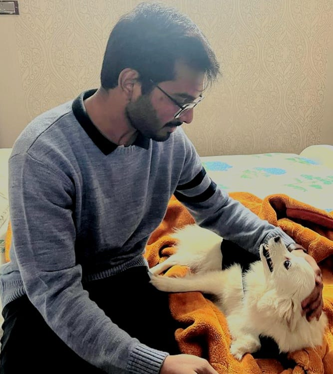
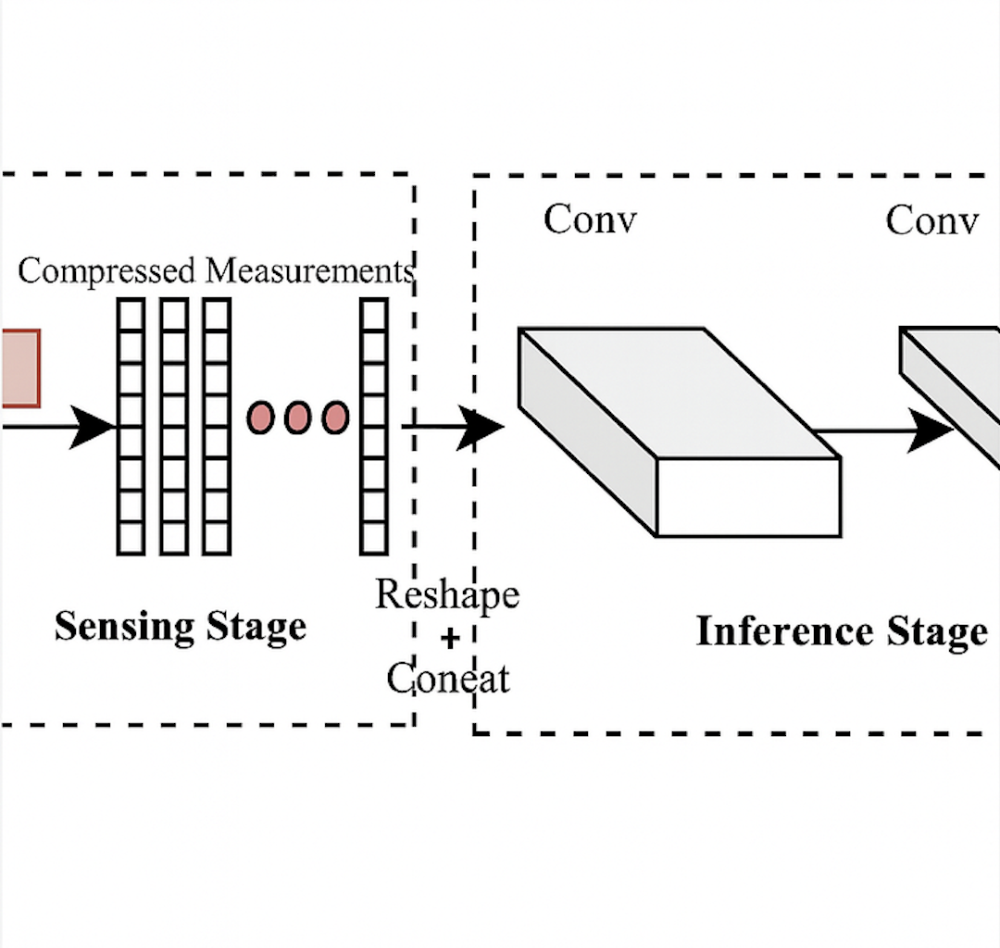
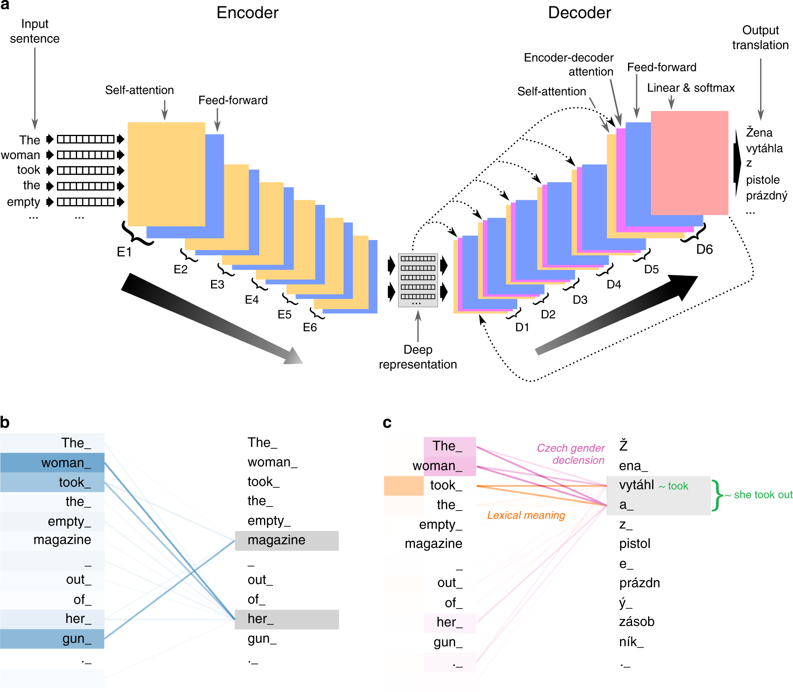
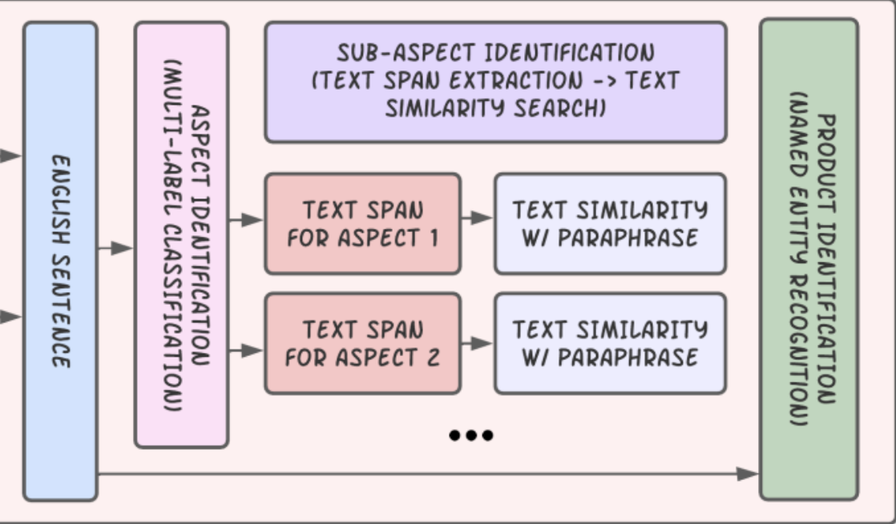

Lead ML Engineer @ Posha
Aditya is a Machine Learning Engineer with over 6 years of experience designing and deploying scalable ML systems across diverse domains — including Classical Machine Learning (e.g., Linear and Logistic Regression, SVMs, XGBoost), Deep Learning, NLP, Reinforcement Learning, Computer Vision, and Recommendation Systems. He is proficient in frameworks like PyTorch, PyTorch Lightning, vLLM, LangChain, Keras, and FastAPI, enabling seamless end-to-end ML development and deployment.
At Posha, a food robotics startup, Aditya leads the full-stack ML pipeline — spanning data collection, foundational model development, and deployment on both cloud and edge devices. His work powers robotic cooking through intelligent perception and adaptive control, while also enabling a rich user experience via personalized recipe generation and multilingual search tailored for diverse communities.
Previously, he worked as an Applied Scientist II at Flipkart, where he built a Competitive Intelligence Platform (CIP) from the ground up to ingest large-scale social media data and perform targeted sentiment analysis for product and brand monitoring. It was adopted by CXOs to track Flipkart’s market positioning and sentiment dynamics on a weekly basis. He began his career as a MLE at Samsung Research, where he contributed to hand gesture recognition systems for human-computer interaction in AR/VR environments.
Aditya graduated in 2019 with a Bachelor's degree in Electrical Engineering from the Indian Institute of Technology Delhi (IIT Delhi).

Education
Indian Institute of Technology Delhi (IIT Delhi)
B.Tech in Electrical Engineering (2015 – 2019)
Experience
- Search and Recommendation System: Built a hybrid search engine combining BM25 with domain-specific semantic embeddings (GIST-Embedding) to support 700+ daily queries across 1,000 recipes and 200 ingredients. Trained multilingual models using LLM-augmented synthetic data to resolve fuzzy queries and enable Hindi-English code-mixed retrieval. Deployed FAISS-based retrieval optimized for sub-100ms latency. Achieved a 30% gain in NDCG@5, a 20% lift in recipe conversions, and 70% success on previously unsupported queries.
- Universal Frying Model (UFM): Fine-tuned a Swin Transformer-based doneness predictor for real-time frying, leveraging visual cues to eliminate fixed-timer failures. Generated training data using bucketed doneness intervals and area-weighted label mixing. Achieved 0.025 MAE with ~30ms cloud latency, enabling consistent, adaptive cooking across varied ingredients, preparation styles, and lighting conditions.
- Food Segmentation & Dispense Localization: Fine-tuned a SegFormer-based real-time segmentation system for pan, food, robotic arms, and background in cluttered kitchen environments, achieving 97% mIoU. Integrated a dispense-localization module to isolate newly added ingredients with 90% IoU, and improved ingredient classification by applying a Swin Transformer to localized regions, reaching 82% F1 score.
- Vision-Based Quality Auditors: Adapted YOLOv8-based image quality validators to detect blur (steam, oil/gravy splatter), glare, human obstructions, and occlusions from external utensils, achieving 99% F1. Enabled automated cooking pause & recovery. Integrated splatter detection (to prevent wall contamination) and lump identification (for food safety) using SegFormer, improving recipe reliability under messy, real-world conditions.
- Recipe Customisation: Designed a recipe customization pipeline that adapts user-specified ingredient edits into instruction-level rewrites, grounded in device constraints and a knowledge base of machine, ingredient, and recipe semantics. Curated high-quality data using LLM-as-a-judge and DeepSeek-R1 with human-in-the-loop validation, and fine-tuned a Qwen-3 model in two stages (SFT + GRPO) to enable structured, traceable outputs and self-reflective reasoning, allowing the model to think through adaptations autonomously.
- Competitive Intelligence Platform (CIP): Built an NLP-driven analytics system to track Flipkart’s brand performance across five major social platforms by ingesting organization-level feedback and tagging it by sentiment, business unit, and aspect for marketplace-level benchmarking. Partnered with business teams to define high-level (L1) aspects (e.g., Delivery, Cancellation), and applied topic modeling with few-shot learning to discover granular L2 sub-aspects (e.g., delivery SLA). These insights powered CXO dashboards with VoC (Voice of Customer) metrics, enabling weekly Net Promoter Score (NPS) forecasts with ~1% MAPE and business unit–level market share predictions across 8 verticals with 1.5% MAE using regression ensembles.
- FashionAI (Generative Design): Fine-tuned a diffusion model with full attribute control for high-fidelity fashion generation tailored to seller needs. Used Masked Textual Inversion to learn isolated attribute embeddings by masking irrelevant regions, outperforming DreamBooth and improving over baseline 'stability-ai' Stable Diffusion by 50%. Enabled precise attribute-conditioned synthesis with reliable generalization up to 4 attribute combinations, unlocking guided design and generative catalog monetization.
- Gesture Recognition: Developed a sensor-free hand gesture recognition system for Latin characters and emojis, enabling real-time interaction in AR/VR environments. Achieved 98% IoU for hand segmentation using a MobileNet + DenseASPP architecture with curriculum learning, and 90% classification accuracy with a DenseNet-based gesture recognizer.
- Photorealistic Image Compositing: Trained a CNN in an unsupervised setting to model human perception of realism and filter out low-quality composites. Built a synthetic dataset by pasting segmented COCO objects onto random backgrounds using instance masks, with learnable color transfer for visual coherence. Trained a Conditional GAN (Pix2Pix) to generate realistic composites conditioned on background and target object pairs.
- Liver & Lesion Segmentation (LiTS): Collaborated with Medanta Hospital to automate liver and lesion segmentation from abdominal CT volumes using H-DenseUNet (3D-CNN), achieving Dice scores of 0.96 for liver and 0.85 for lesions. Enhanced patient-level classification across Healthy, Cirrhosis, and HCC categories by 20% by integrating radiologist-supervised handcrafted features with SVM-based analysis.
Publications

This paper proposes a privacy-preserving, data-adaptive compressive sensing framework for image recognition, enabling inference directly from compressed measurements without reconstructing full images. It replaces block-based random sampling with a learned, global-context-aware encoder that focuses on semantically informative regions. The approach reduces data by ~50% while preserving recognition accuracy, and eliminates the need to store or transmit raw visual data. Its strong generalization across large-scale datasets makes it well-suited for privacy-sensitive applications like elderly fall detection.

This work presents a system for implicitly estimating customer experience from social media mentions across platforms such as Twitter, Instagram, LinkedIn, and Facebook. Using advanced NLP techniques, it tags feedback by marketplace, aspect, and sentiment to surface actionable pain points. The platform enables CXOs to track market share, detect emerging trends, and benchmark against competitors in real time, while accurately predicting NPS to drive proactive, data-informed brand strategy.

This paper introduces a multi-stage deep learning pipeline for extracting actionable Voice of Customer (VoC) insights from social media posts in English, Hindi, and Hinglish. Leveraging real-time, large-scale feedback from platforms like Twitter and Instagram, it addresses the limitations of traditional surveys by identifying customer pain points and product-specific experiences across various journey stages. The approach provides organizations with a scalable, cost-effective solution for understanding and enhancing customer satisfaction.
Project Details
Search and Recommendation System
Hybrid search engine and Recommendation System with semantic understanding
- Users frequently entered misspelled recipe names, fuzzy spellings, Hindi-English code-mixed text, or vague descriptions—challenges amplified by the diversity of the user base. Traditional keyword search (BM25) failed to handle such noise effectively. To address this, deployed a hybrid search engine combining BM25 for exact matches with a fine-tuned GIST-Embedding model for semantic similarity. The system handled 700–800 daily queries across ~1,000 recipes and ~200 ingredients, bridging the gap between precise matching and contextual understanding to improve discoverability for both structured filters and free-form queries.
- Adapted a pre-trained GIST-Embedding model for two distinct tasks: (1) a query correction model trained using synthetic data generated via LLM-based augmentation and NLP techniques (e.g., character swaps, Levenshtein ≤3) to handle fuzzy spellings and Hindi-English code-mixed queries, and (2) a semantic retrieval model adapted using domain-specific Q/A pairs with hard negatives from related recipes to improve fine-grained semantic separation.
- Built a 4-stage search pipeline: (1) corrected each query token by matching it to its closest token in a binary-quantized embedding space using the query correction model, (2) expanded non-English tokens with language-specific synonyms, (3) retrieved ~100 candidates from the binary embedding space, and (4) re-ranked results using the full-precision semantic embedding model and business logic. FAISS-powered retrieval kept end-to-end latency under 90ms. Improved search performance across key metrics: NDCG@5 lifted by 30%, recipe-to-click conversion rate increased by 20%, and fuzzy/transliterated query success rose to 70% from a 0% baseline.
- Built a personalized recipe recommender using semantic embeddings with hybrid filtering that combined user preferences, dietary tags, and past cooking history with collaborative signals. Solved the cold-start problem by introducing an onboarding flow where users specify allergens, cooking habits, and select 3+ preferred recipes—similar to recommendation flows used by Netflix and Spotify.
Universal Frying Model (UFM)
Regression model for real-time doneness prediction
- Replaced fixed frying timers in robotic cooking systems with a Swin Transformer-based regression model that predicts ingredient doneness on a continuous 0–1 scale using real-time visual cues. This dynamic control eliminates under- and overcooking errors, delivering consistent results across diverse ingredients and preparation styles.
- Addressed limited labeled data by collecting bucketed doneness annotations in the 0–0.75 range for individual ingredients under varied lighting conditions (dark, ambient, and bright). Each ingredient was cooked in isolation, and its region was localized using a food segmentation model to capture precise per-ingredient doneness masks. During training, synthetic multi-ingredient scenes were generated by blending up to 3 segmented ingredients into one frame. Labels were computed via area-weighted averaging of individual doneness scores, constrained to adjacent label buckets to preserve semantic consistency in the regression target space. This augmentation strategy substantially diversified and expanded the dataset.
- Exported the model to ONNX and deployed a CPU-optimized inference pipeline that processes raw camera frames every 10 seconds without preprocessing. Achieved low-latency inference with ~30ms on cloud and ~80ms on edge devices, generalizing well across lighting and ingredient variations with a validation MAE of 0.025.
Food and Ingredient Segmentation with Dispense Localization
Real-time SegFormer pipeline for ingredient detection and classification
- Food Segmentation: Annotated 1,500 real-world images captured under occlusion, glare, and low-light conditions in cluttered kitchen environments to train a SegFormer model for segmenting pan, food, robotic arms (fixed and rotating), and background. To scale the dataset, generated pseudo-labels on ~10,000 unlabeled frames using the trained model and selected 2,000 high-confidence samples (≥95% confidence) for self-distillation. Fine-tuned the model for a few additional epochs using both annotated and pseudo-labeled data, achieving 97% mean IoU—a +1% improvement from distillation. The final model supports multiple downstream tasks, such as detecting pan state transitions for dynamic control in liquid-heavy recipes (e.g., cooking gravy, frying onion purée). Deployed via ONNX for CPU inference with 120ms latency on edge device and 70ms on cloud.
- Ingredient Localization and Classification: Developed a pipeline to detect and classify newly dispensed ingredients after each macro-dispense instruction (up to 4 times per session). Used a SegFormer model for localization, achieving 90% IoU with a +3.5% gain from self-distillation. Cropped the localized regions and classified them using a Swin Transformer, reaching 85% accuracy and 82% F1 score—significantly outperforming full-pan classification (<50% accuracy). This system enables automated recipe debugging by comparing user-executed recipes with ground-truth references to identify ingredient mismatches and compute step-level similarity scores. Deployed end-to-end via ONNX on CPU with 200ms per-frame latency.
Vision-Based Quality Auditors for Robotic Cooking
YOLOv8 and SegFormer for automated quality control
- Image Auditor: Vision failures caused by blur, poor lighting, or occlusions can derail automated cooking. To preempt such failures, fine-tuned a YOLOv8 model to serve as a real-time image quality auditor using 5,000 hand-annotated frames. Achieved 92.5% IoU at the bounding box level and 99.2% F1 score in binary classification (good vs. bad frames). The system pauses recipe execution after 5 consecutive bad frames and prompts users to clean the camera, preventing downstream vision breakdowns. Deployed via ONNX on CPU with ~50ms latency on edge and ~70ms on cloud.
- Splatter Detector: Oil and gravy splatter during cooking—especially in gravy-rich recipes—can contaminate the robot's surroundings and nearby walls. To address this, fine-tuned a SegFormer model on 500 annotated frames, achieving 69.8% IoU. After each macro-dispense, the system resets its baseline using the previous frame to account for food falling on the main arm during dispensing. If splatter exceeds 2% of the image area relative to the baseline, stirrer speed is increased to 90% to minimize residue buildup and prevent cross-contamination. Deployed via ONNX on CPU with ~120ms latency on edge and ~70ms on cloud.
- Lump Detector: Undissolved lumps in meat or noodle dishes can affect health. To ensure a consistent and safe meal, implemented lump detection using a SegFormer model trained on end-of-session frames. Achieved 69.8% IoU for meat and 88% IoU for noodles. If lump area exceeds 2% of the frame, the system adds 100ml water and re-stirs for noodles, and 50ml water and re-stirs for meat. Deployed via ONNX on CPU with ~100ms latency on edge and ~60ms on cloud.
Recipe Customisation
Automated Recipe Customisation using LLMs
- Our recipes are rigid and assume fixed ingredient availability, but real-world users often lack one or more components. Simply skipping ingredients risks recipe failure. To solve this, we designed a flexible recipe customization pipeline that transforms user-specified edits—such as removals, substitutions, or additions—into precise instruction-level rewrites. These adaptations are grounded in robotic constraints (e.g., dispensing limits, heating parameters) and guided by a structured knowledge base of machine, ingredient, and recipe semantics. The system ensures modified recipes remain executable while preserving cooking logic, safety, and output quality.
- Curated a high-quality training dataset using LLM-based scoring (DeepSeek-R1 as evaluator) and human-in-the-loop validation to ensure correctness, traceability, and minimal edits. Fine-tuned a Qwen-3 model in two stages: Supervised Fine-Tuning (SFT) followed by GRPO (Guided Reinforcement with Preference Optimization). SFT taught the model to produce structured JSON outputs aligned with our target schema and served as a strong initialization for GRPO—especially important for smaller LLMs lacking zero-shot generalization on complex, domain-specific tasks. GRPO then instilled step-wise reflective reasoning, ensuring each instruction rewrite is grounded in explicit transformation rules.
- This traceability enables a closed feedback loop: minor issues are addressed through prompt tuning, while larger or repeated failures lead to additional fine-tuning on targeted examples. The model thus evolves continuously while maintaining strict rule compliance and transparency.
Competitive Intelligence Platform (CIP)
NLP-driven social analytics for brand performance tracking
- Traditional Voice of Customer (VoC) programs rely heavily on surveys, interviews, and customer support logs, which are often expensive, biased, and limited in scale. To address these constraints, we built a scalable deep learning pipeline that leverages user-generated content across five major social media platforms to extract structured, actionable insights at the Organization × Journey Node × Product level. This pipeline processes feedback across 11 Indic languages, including noisy Hindi-English code-mixed text, enabling brands to monitor public sentiment at scale and in real time.
- Multilingual Translation Pipeline: Fine-tuned a multilingual model on the Samanantar dataset for standard Indic text and designed a synthetic data generation pipeline to address the scarcity of labeled code-mixed corpora. Feedback was first translated into English, where key noun phrases were extracted using POS tagging and replaced with sentinel tags representing domain-specific concepts (e.g., product, issue type). The abstracted text was then translated into Hindi, transliterated into Latin script using a custom in-house model, and finally reassembled by substituting the sentinel tags with the original noun phrases. This process produced high-fidelity Hindi-English code-mixed data, significantly improving downstream sentiment analysis and span extraction.
- Targeted Aspect-Based Sentiment Analysis (TABSA): Curated a dataset of ~15,000 manually annotated feedback samples categorized across 10 key e-commerce aspects (e.g., Delivery, Refund, Customer Care) and 3 sentiment classes (Positive, Neutral, Negative). Focused on single-marketplace mentions to simplify annotation and enable dynamic runtime augmentation. Fine-tuned a T5 (encoder-decoder) model using domain-specific augmentation strategies, including sentence interleaving (blending feedback from two marketplaces) and sentiment inversion (paraphrasing while flipping sentiment in one source). These techniques improved model robustness for real-world, multi-marketplace scenarios.
- Text Span Extraction and Sub-Aspect Discovery: Combined SQuAD with ~5,000 in-house annotated samples to fine-tune a span extraction model (T5 ABSA-tuned checkpoint with a modified task prefix) that identifies supporting evidence for sentiment labels. Used unsupervised clustering and topic modeling to surface business-relevant sub-aspects (e.g., delivery SLA, packaging quality), and built a supervised classifier using few-shot learning (~100 examples/sub-aspect). All sub-aspects were vetted by business stakeholders for relevance and operational actionability.
- Product Tagging and VoC Score Aggregation: Built a structured pipeline to extract product mentions from feedback and map them to corresponding business units (BUs). This enabled generation of a granular Voice of Customer (VoC) score across organization × aspect × sub-aspect × BU dimensions. These insights surfaced actionable sentiment trends and issue hotspots across verticals, supporting data-driven decision-making at scale.
- Business KPI Forecasting: Used VoC scores as predictive features for key business metrics. Trained a regression model to forecast weekly Net Promoter Score (NPS) with ~1% MAPE, and used an ensemble of linear regressors to estimate BU-level market share across 8 verticals with 1.5% MAE. These forecasts were integrated into CXOs dashboards, giving them a real-time visibility into brand sentiment, customer pain points, and business performance.
FashionAI (Generative Design)
Fine-tuned diffusion model for attribute-controlled fashion generation
- Tackled the high cost and time overhead of manual catalog photography by fine-tuning a diffusion model to generate high-quality apparel images tailored to seller-specific needs. The system supports controllable synthesis across key visual attributes like neckline, sleeve length, fabric, and color, and generalizes reliably to 4-way attribute combinations. This enabled rapid prototyping and personalized visuals, allowing sellers to scale catalog creation, reduce go-to-market time, and unlock new monetization opportunities through automated visual merchandising.
- Enhanced editing fidelity by applying Masked Textual Inversion to learn isolated attribute embeddings while masking irrelevant regions during training. This method outperformed DreamBooth and improved editing precision by 50% over baseline stability-ai's Stable Diffusion, enabling targeted visual edits without quality degradation. Delivered consistent outputs across high-variance product lines like ethnic wear, t-shirts, and jeans.
Gesture Recognition
Sensor-free hand gesture recognition for characters and emojis
- Built a sensor-free hand gesture recognition system to enable low-cost, real-time interaction in AR/VR environments without relying on specialized hardware like depth sensors or gloves. Designed to run on standard RGB webcams, the system supports virtual typing, gaming, and accessibility use cases through accurate recognition of Latin characters and emoji gestures, facilitating natural, touchless communication.
- Achieved 98% IoU for hand segmentation using a lightweight MobileNet + DenseASPP architecture trained with curriculum learning to handle diverse lighting, occlusion, and pose variations. For classification, a DenseNet model achieved 90% accuracy on a custom gesture dataset built using open-source datasets (HANDS17, EgoHands, HaGRID) and augmented with in-house examples to improve generalization. Delivered low-latency inference optimized for seamless AR/VR experiences.
- Secured 3rd place in Samsung’s internal Machine Learning competition. Presented a live demo to leadership teams from Korea and Noida, demonstrating accurate gesture recognition from 20 feet using a laptop’s built-in camera. The project was praised for its feasibility, real-world applicability, and innovation in sensor-free human-computer interaction.
Photorealistic Image Compositing
Conditional GAN for realistic image composition
- Designed a background replacement system for mobile devices, enabling users to swap backgrounds while preserving themselves as the primary subject. The objective was to generate realistic, artifact-free composites without manual annotations—powering features like background removal, object swapping, and visual editing in constrained environments.
- Built a CNN-based model in an unsupervised setting to mimic human perception of realism. It was trained on real images (COCO + 1K ImageNet) and synthetic composites to learn discriminative cues of authenticity. To support this, a large-scale synthetic dataset was generated by overlaying segmented COCO objects onto diverse backgrounds using instance masks, with learnable color and lighting transformations for visual consistency. We used the realism model to filter out low-quality composites, yielding a high-quality dataset for downstream supervised training.
- Trained a Pix2Pix Conditional Generative Adversarial Network (GAN) to generate visually coherent composites by blending one or two foreground objects onto independent background images. The model preserved spatial alignment and visual fidelity, enabling robust mobile deployment for applications like content creation, digital design, and background switching.
Liver & Lesion Segmentation (LiTS)
Automated segmentation and classification for liver CT scans
- Manual interpretation of abdominal CT scans for liver and lesion analysis is time-consuming, inconsistent, and not scalable. In collaboration with Medanta Hospital, we built an end-to-end deep learning system to automate liver and lesion segmentation and classify patients into Healthy, Cirrhosis, or Hepatocellular Carcinoma (HCC) categories—accelerating diagnosis and supporting consistent clinical decision-making.
- Trained an H-DenseUNet on the LiTS dataset, achieving a Dice coefficient of 0.96 for liver segmentation and 0.92 for lesion segmentation. Model robustly delineated anatomical boundaries across varied cases. Conducted supervoxel-level error analysis to isolate and reduce false positives, enhancing segmentation quality and reliability for downstream patient classification.
- Fine-tuned an SVM with linear kernel using radiologist-guided handcrafted features, boosting patient-level classification accuracy by 20% and slice-level accuracy by 8%. These clinically validated features ensured relevance in real-world deployment and enabled integration into hospital radiology workflows.
Patents
A countertop cooking appliance that uses machine learning models to automatically prepare a plurality of different meals is described. The appliance includes a micro dispensing system containing a plurality of pods having granular contents. The pod rotation mechanism moves a selected pod into a position above a pan to dispense the granular contents. The rotation element rotates the selected pod to dispense an amount of granular content from the dispensing section with each rotation of the selected pod by the rotation element. The appliance may also include a stirrer that uses at least one spatula to gradually contact substantially an entire area of the pan after the stirrer completes a rotation cycle. Control circuitry coupled to a macro ingredient delivery system, the micro dispensing system, the stirrer, a heating element, and sensors performs recipe methods using a plurality of computer vision models to monitor recipe progress.
The present subject matter refers a method for managing sensor operation with respect to sensor operation in a computing device. The method comprises detecting an activity based on at least one application in a computing device. An operation of a plurality of sensors within the device is monitored based on the detected activity. At-least one sensor is detected among the plurality of sensors based on said monitored operation. A set of sensors outputting readings within the device are selected, said selected set comprising at least one of one or more of said plurality of monitored sensors other than the ascertained sensor. A value for the detected activity is determined based on computing value of said at least one ascertained sensor based on a learned relation among the selected set of sensors and the outputted readings of one or more sensors within the selected set of sensors.
A system and method for determining market share of an organization. The method encompasses receiving, at least one of a voice of customer data, an internal data of the organization and an external data. The method thereafter encompasses determining, one or more set of target features based on at least one of the voice of customer data, the internal data of the organization and the external data. Further the method comprises generating, one or more pre-trained dataset based at least on the one or more set of target features. The method thereafter encompasses receiving, at least one of a first set of feature constraints and a second set of feature constraints. Further the method comprises determining, the market share of the organization based at least on the one or more pretrained dataset, the first set of feature constraints and the second set of feature constraints.
A system and method for generation of a user feedback data is provided. The method encompasses extracting in real time, from social media platforms, a set of social media posts, wherein each social media post comprises mentions related to e-commerce platforms. The method thereafter encompasses categorizing, each social media post into one of a promotional post and non-promotional post. The method further encompasses identifying, a sentiment associated with each social media post. Further, the method encompasses assigning, a customer experience node and/or a business unit with the social media posts. The method thereafter leads to removing, irrelevant posts from the set of social media posts. The method then generates the user feedback data based on the removal of the at least one irrelevant post and the assigned customer experience node, the assigned business unit and/or the sentiment of each social media post.
Interests
Coding impactful solutions, writing tech blogs, and smashing it in cricket, table-tennis, and golf!